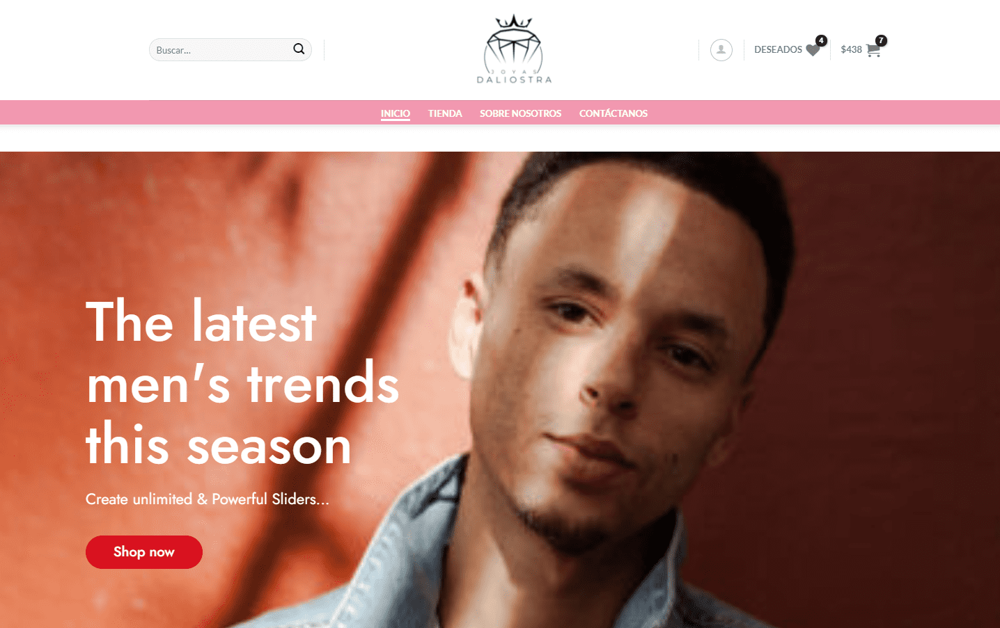

<div class="modal fade fixed top-0 left-0 hidden w-full h-full outline-none overflow-x-hidden overflow-y-auto " id="exampleModalXl" tabindex="-1" aria-labelledby="exampleModalXlLabel" aria-modal="true" role="dialog">
    <div class="modal-dialog modal-xl modal-dialog-centered relative w-auto pointer-events-none ">
      <div class="modal-content border-none shadow-lg relative flex flex-col w-full pointer-events-auto bg-slate-900 bg-clip-padding rounded-md outline-none text-current ">
        <div class="modal-header flex flex-shrink-0 items-center justify-between p-4 border-2 border-red-300 rounded-t-md">
          <h5 class="text-2xl  w-full text-center font-light leading-normal text-red-300 " id="exampleModalXlLabel">
            Joyeria Daliostra
          </h5>      
          <button type="button"
            class=" btn-close box-content w-4 h-4 p-1 text-white border-none rounded-none opacity-50 focus:shadow-none focus:outline-none focus:opacity-100 hover:text-white hover:opacity-75 hover:no-underline"
            data-bs-dismiss="modal" aria-label="Close">
          </button>
        </div>
        
        <div class="modal-body relative p-4 grid grid-cols-4 border-l-2 border-r-2 border-b-2 border-red-300 rounded-b-lg">
                
            <div id="carouselExampleIndicators" class="col-span-3 carousel slide relative" data-bs-ride="carousel">
                <div class="carousel-indicators absolute right-0 bottom-0 left-0 flex justify-center p-0 mb-4">
                    <button
                    type="button"
                    data-bs-target="#carouselExampleIndicators"
                    data-bs-slide-to="0"
                    class="active"
                    aria-current="true"
                    aria-label="Slide 1"
                    ></button>
                    <button
                    type="button"
                    data-bs-target="#carouselExampleIndicators"
                    data-bs-slide-to="1"
                    aria-label="Slide 2"
                    ></button>
                    <button
                    type="button"
                    data-bs-target="#carouselExampleIndicators"
                    data-bs-slide-to="2"
                    aria-label="Slide 3"
                    ></button>
                </div>
                <div class="carousel-inner relative w-full overflow-hidden ">
                    <div class="carousel-item active float-left w-full">
                    
                    </div>
                    <div class="carousel-item float-left w-full">
                    
                    </div>
                    <div class="carousel-item float-left w-full">
                    
                    </div>
                </div>
                <button
                    class="carousel-control-prev absolute top-0 bottom-0 flex items-center justify-center p-0 text-center border-0 hover:outline-none hover:no-underline focus:outline-none focus:no-underline left-0"
                    type="button"
                    data-bs-target="#carouselExampleIndicators"
                    data-bs-slide="prev"
                >
                    <span class="carousel-control-prev-icon inline-block bg-no-repeat" aria-hidden="true"></span>
                    <span class="visually-hidden">Previous</span>
                </button>
                <button
                    class="carousel-control-next absolute top-0 bottom-0 flex items-center justify-center p-0 text-center border-0 hover:outline-none hover:no-underline focus:outline-none focus:no-underline right-0"
                    type="button"
                    data-bs-target="#carouselExampleIndicators"
                    data-bs-slide="next"
                >
                    <span class="carousel-control-next-icon inline-block bg-no-repeat" aria-hidden="true"></span>
                    <span class="visually-hidden">Next</span>
                </button>
        </div>
            
            <div class="col-span-1 p-4">
                <p class="text-white font-light leading-loose">
                    Sitio Web E-Commerce para la comercializacion de productos de la empresa Daliostra, cuenta con pasarela de pago FLOW.
                </p>
                
                <p class="text-white font-light mt-4">
                    Tecnologias usadas:
                </p>
                <ul class="text-red-300 list-disc list-inside leading-loose">
                    <li>PHP</li>
                    <li>WordPress</li>
                    <li>Woocoommerce</li>
                    <li>MySQL</li>
                </ul>
            </div>
        </div>

        
      </div>
    </div>
  </div>
  